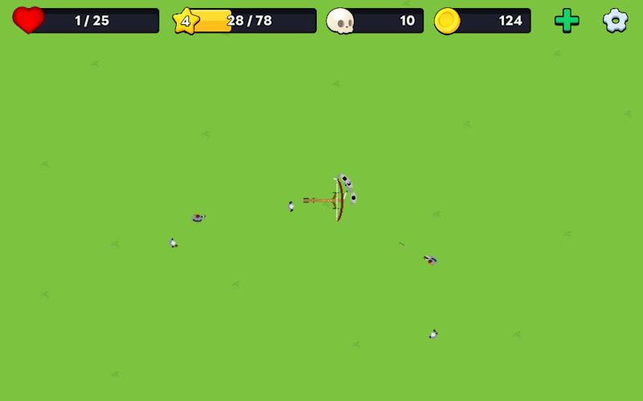

Ballista


A 2D top-down wave-based shoot-em-up game. Control a ballista and destroy your enemies with a click of your mouse.
Roles & Responsibilities
- Sole Developer
- Release in 2 Weeks
- Mouse Only Gameplay
- Right & Left Hand Gameplay
Tools Used
- Ballista Pack
Research Summary
Ballista was a solo project, and the development time was only two weeks. I focused heavily on rapid prototyping and the agile methodology was used during development. With the goal of single hand gameplay, I conducted research on control settings. Button mapping is one of the most used accessibility settings in video games. Allowing the player to switch the mouse controls increases accessibility for left-handed players.